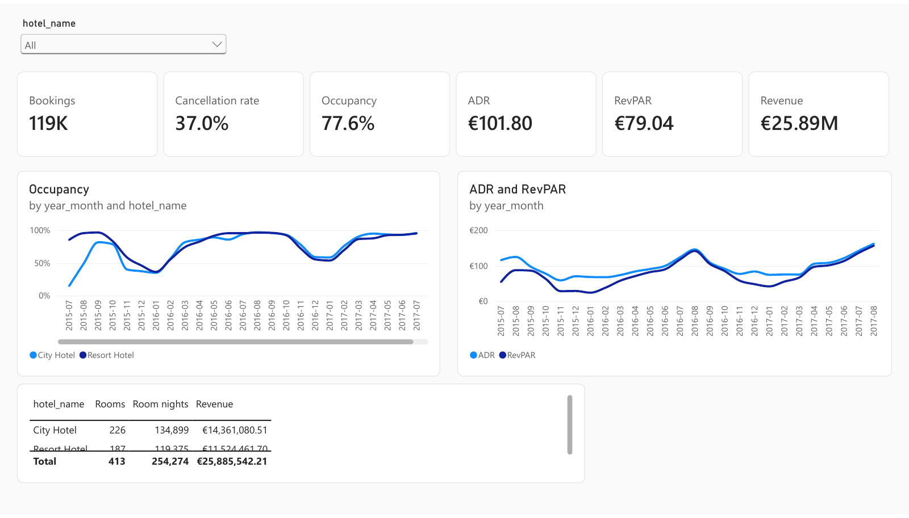
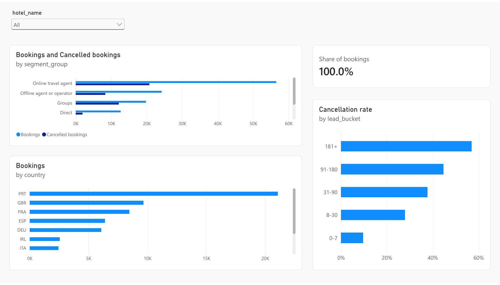
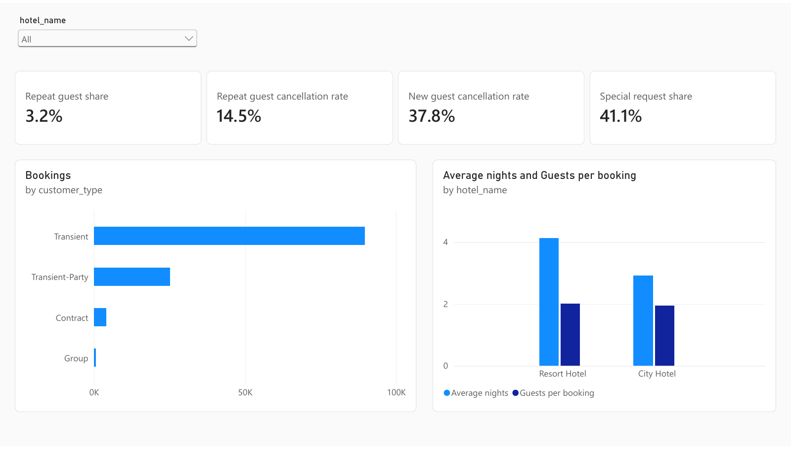
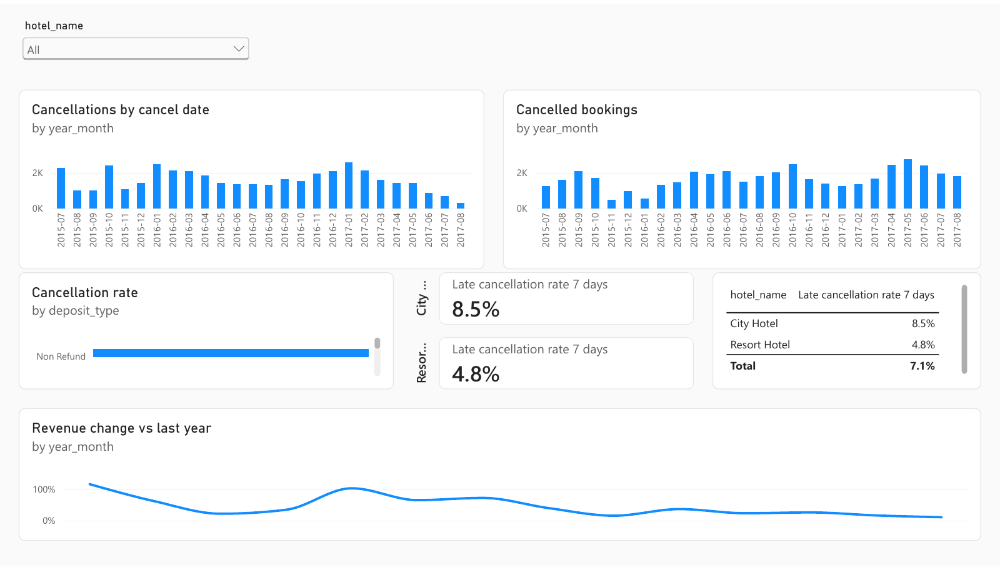
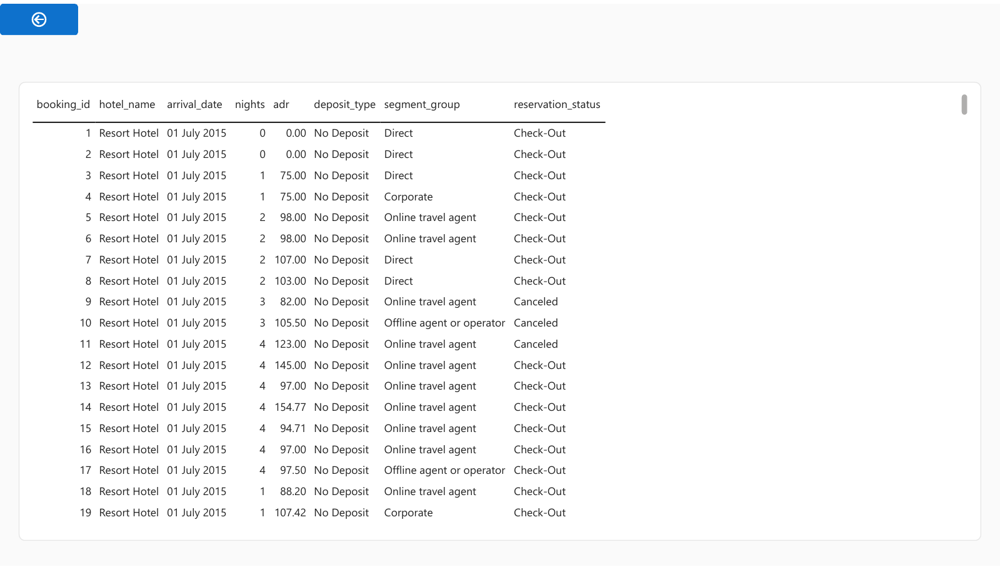
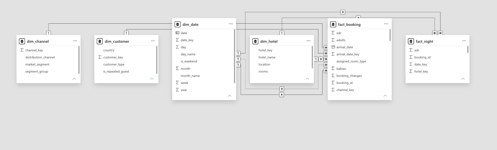

Two hotels, 119,390 bookings
An analysis of booking data from a resort in the Algarve and a city hotel in Lisbon, covering July 2015 to August 2017.
I built a Power BI report and this web version from the same source data. Below are monthly performance charts, a lookup of historical cancellation rates, and a calculator for exploring overbooking costs.
The Power BI report
The five pages cover overall performance, demand and channels, customers, cancellations, and individual booking details. The report uses a six-table star schema and DAX measures.

1. Overview
2. Demand and channels
3. Customers
4. Cancellations
5. Booking detail{kind=link}

The data modelClick any page to open the PDF. The measures are in measures.dax on GitHub, with comments explaining the calculations.
Explore the data
Select a hotel to update the charts and calculators below.
1. Hotel performance
Occupancy by month
Average daily rate and RevPAR by month
Bookings by segment
Cancellation by lead time
Cancellation by deposit type
Bookings by guest country
2. Cancellation rates for similar bookings
Choose a lead time, deposit type, booking channel, and guest type to see the cancellation rate for matching bookings. The result includes the number of observations behind the rate.
This summarises historical bookings and does not predict whether a future booking will be cancelled.
3. Exploring overbooking costs
A hotel may accept more bookings than it has rooms to allow for cancellations. This can reduce empty rooms, but it also creates a risk of having to relocate guests when too many arrive.
This calculator compares the expected costs of different overbooking levels. Its lowest-cost result depends on the assumptions you enter. It is an illustration, not a recommendation for operating a hotel.
The relevant rate is for bookings still active shortly before arrival, rather than the overall cancellation rate of 37 percent. Earlier cancellations leave more time to resell the room. Among bookings active one week before arrival, 8.5 percent at the city hotel and 4.8 percent at the resort later cancelled or did not show up. Select another timeframe or enter your own rate below.
Set the cost of an empty room and the cost of relocating a guest. The chart shows how the expected nightly cost changes with extra bookings.
How I built this
I used DuckDB to turn the original 32-column dataset into a star schema: two fact tables for bookings and room nights, plus dimensions for dates, hotels, customers, and booking channels. Separate date relationships let the report analyse bookings by arrival date or cancellation date.
Room capacity is not provided, so I estimated it from each hotel's busiest occupied night: 226 rooms for the city hotel and 187 for the resort. Occupancy and RevPAR depend on these estimates.
Occupancy must use available room nights as its denominator. Dividing occupied nights by themselves would incorrectly produce 100 percent for every month. A test checks for this problem in the dataset.
The build saves the prepared data as JSON files. The browser reads these files to draw the charts and run the calculators, without a backend service or machine learning model. The code, SQL, and tests are on GitHub.
Data: Hotel booking demand, by Nuno Antonio, Ana de Almeida and Luis Nunes, 2019. Published in Data in Brief under CC BY 4.0.